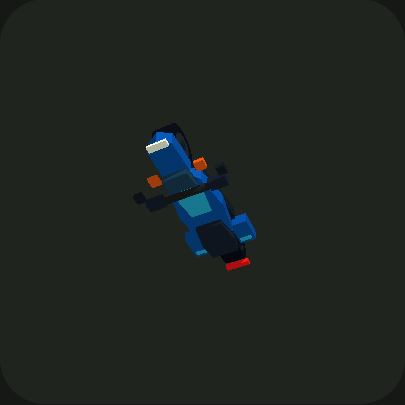

POSITION · DIRECTION
Follow the road ahead.
The selected vehicle stays aligned with your travel direction as the route moves through the map.
Waypoint · Release 2.7.5
Choose a Car, Motorcycle or Bicycle for the phone-map position cursor. It follows your travel direction while you stay in control of the map’s 2D or 3D tilt.
01 / POSITION
Pick the model that suits your route in Settings. All three are included with Waypoint, and the larger angled previews make each model easier to inspect before you select it.


02 / CAMERA
The cursor turns with the direction you travel. Its orientation is independent of the map camera, so it remains visible whether you prefer a flat map or a tilted view.
POSITION · DIRECTION
The selected vehicle stays aligned with your travel direction as the route moves through the map.
MAP · YOUR VIEW
Flat and tilted map views keep the same cursor model in clear view. The cursor does not decide the camera tilt.
Search, Nearby, Map info, Map tilt, Locate and Settings have clearer labels and spacing on compact screens.
03 / COMPATIBILITY
The selectable 3D vehicle models apply to the phone map. Android Auto continues to use its standard marker, with navigation and route guidance unchanged.
04 / COMMUNITY
Community contributions help Waypoint grow in useful directions.
SuussonicOpened PR #65 and contributed the 3D cursor feature.Three modelsBundled Car, Motorcycle and Bicycle cursors for the phone map, with map tilt kept independent from travel direction.Clearer controlsCompact map actions identify their purpose with visible labels.